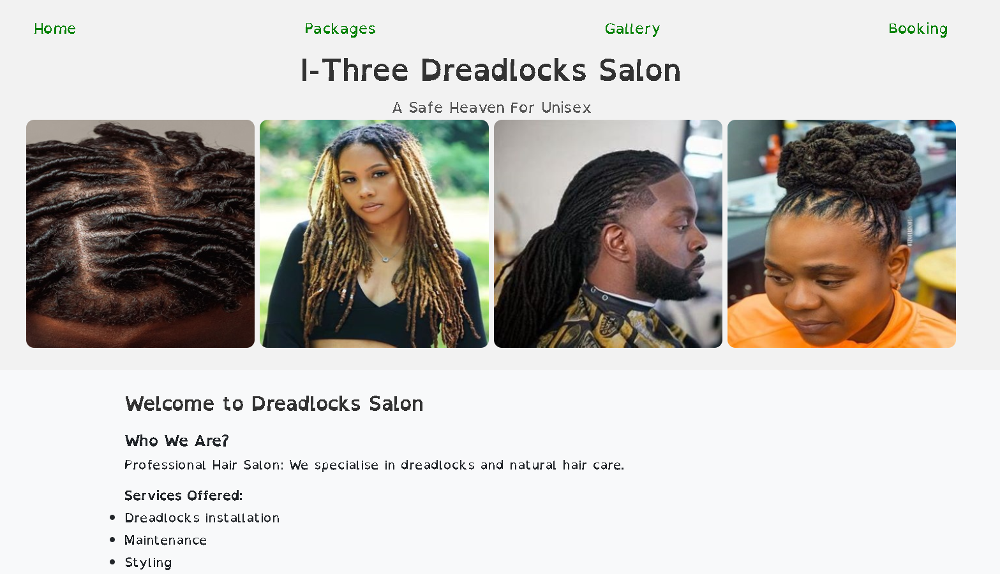
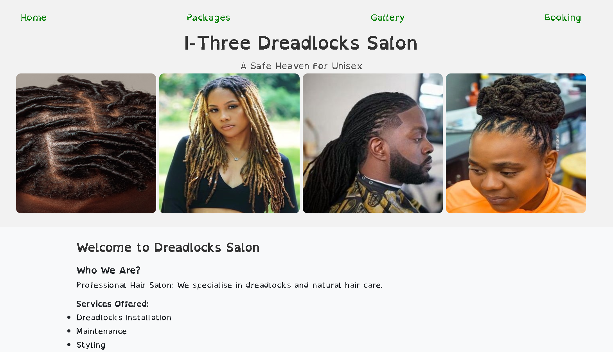
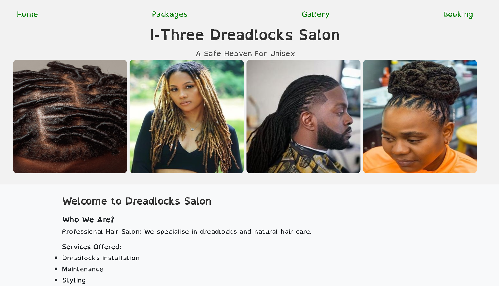

Testing
Testing was continuous throughout the website build. I used Chrome developer tools to identify and address any issues as they arose.
My mentor also pointed out that the images within the website were .png format which hindered the performance of the website. To combat this all images have been converted to .webp format to significantly improve performance.
On the Packages page. the list items were out of alignment and not centered even after using the bootstrap text-center class. This was due to padding, which has now been removed to center the list of items.
W3C Validator
W3C validator was used to validate the HTML on all pages of the website. It was also used to validate CSS in the style.css file.
Index Page HTML
Packages Page HTML
Gallery Page HTML
404 Page HTML
style.css CSS
##HTML Validator Screenshots of errors and correction.
To correct the errors in the code HTML and CSS validators are used with screenshots.Below are the validated codes screenshots.
##Validated with w3c JigSaw validator.
One issue I was coming across when testing my html page was an error displayed by w3. Trailing slash on void elements has no effect and interacts badly with unquoted attribute values.' However, even after removing these trailing slashes when saving my document Visual Studio Code would re-enter them. Luckily as w3 states these have no effect on the code.
Testing User Stories
First Time Visitors
I want to find out what services are on offer.

Users are able to navigate to other pages. Packages, gallery and booking models page of the website
Previous work can be viewed by visiting the gallery page. Gallery page of the website
I want to be able to navigate through the website with ease by clicking the link
The navigation bar at the top of the page allows easy navigation throughout the website.
I want to be able to book/make contact.
User's can easily make a booking using the Book Now button. This button leads to a modal, which allows a user to select various options to make a booking. Upon a successful booking, the user is presented with a thank you message.
Booking Modal
Booking.html

 ##Validated with w3c JigSaw validator.
##Validated with w3c JigSaw validator.
 One issue I was coming across when testing my html page was an error displayed by w3. Trailing slash on void elements has no effect and interacts badly with unquoted attribute values.' However, even after removing these trailing slashes when saving my document Visual Studio Code would re-enter them. Luckily as w3 states these have no effect on the code.
Testing User Stories
First Time Visitors
I want to find out what services are on offer.

Users are able to navigate to other pages. Packages, gallery and booking models page of the website
Previous work can be viewed by visiting the gallery page. Gallery page of the website
I want to be able to navigate through the website with ease by clicking the link
One issue I was coming across when testing my html page was an error displayed by w3. Trailing slash on void elements has no effect and interacts badly with unquoted attribute values.' However, even after removing these trailing slashes when saving my document Visual Studio Code would re-enter them. Luckily as w3 states these have no effect on the code.
Testing User Stories
First Time Visitors
I want to find out what services are on offer.

Users are able to navigate to other pages. Packages, gallery and booking models page of the website
Previous work can be viewed by visiting the gallery page. Gallery page of the website
I want to be able to navigate through the website with ease by clicking the link